Metric macOS:lle
Ikkunallinen ajoitus- ja taajuustyökalupakki macOS:lle sisäänrakennetulla metronomilla. Se asettaa viiveajat tempon mukaan, laskee FM-suhteet ja sivukaistat, synkronoi LFO:n tahtiin ja transponoi samplen, ja sen kokoa muutettavan ikkunan voi pitää auki DAW-ohjelman vieressä. Siri, Pikakomennot ja Ilmoituskeskuksen widget ovat tuettuina.
- Metronomi, tap-tempo ja visuaaliset iskut
- BPM → ms / Hz -muunnin (suorat, pisteelliset, trioolit)
- Sävel ↔ taajuus -taulukko (108 säveltä, A4 = 440 Hz)
- Transponointi ja nopeus, FM-laskuri, LFO-nopeudet, 32 harmonista
- Tap-tempo valikkorivillä, viiveajat ms- tai Hz-yksiköissä sekä metronomi ja sävelet
- Siri, Pikakomennot ja Ilmoituskeskuksen BPM-widget
Näyttökuvat
Mukana on vaaleat ja tummat näyttökuvat, jotka seuraavat verkkosivuston teemaa.

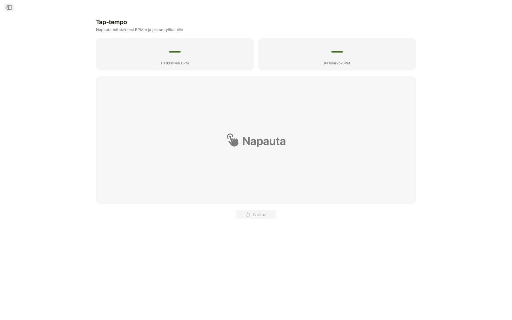
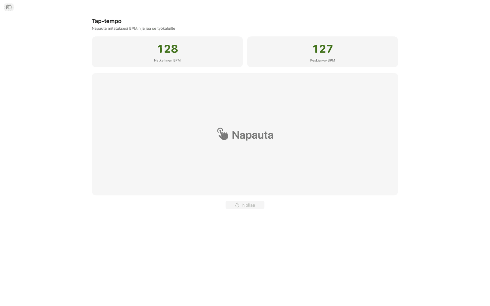
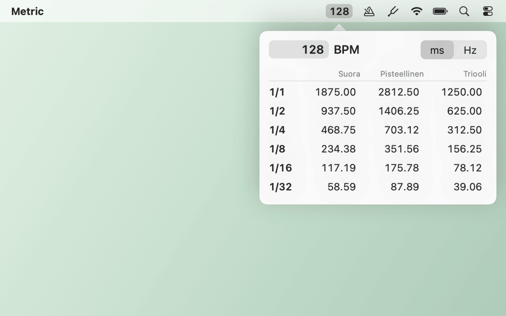
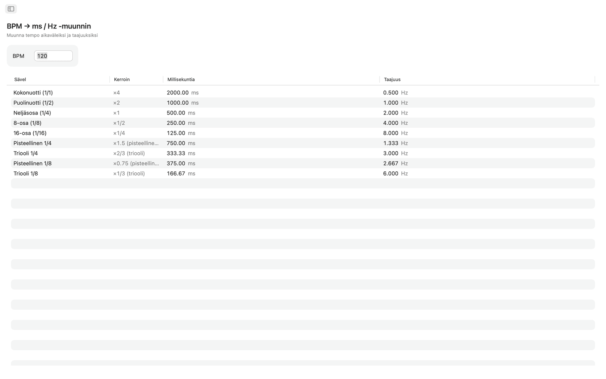
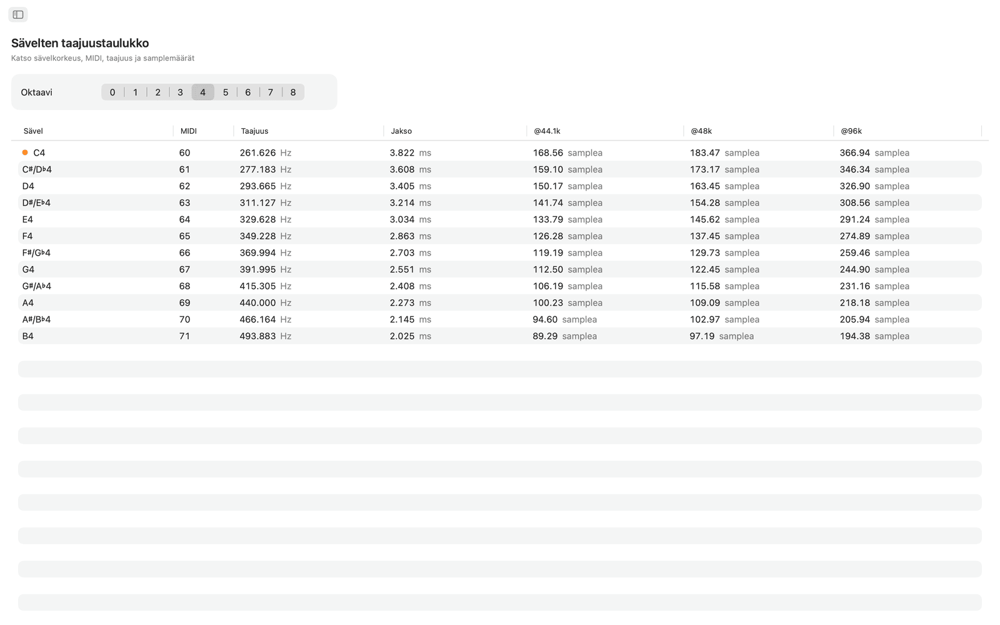
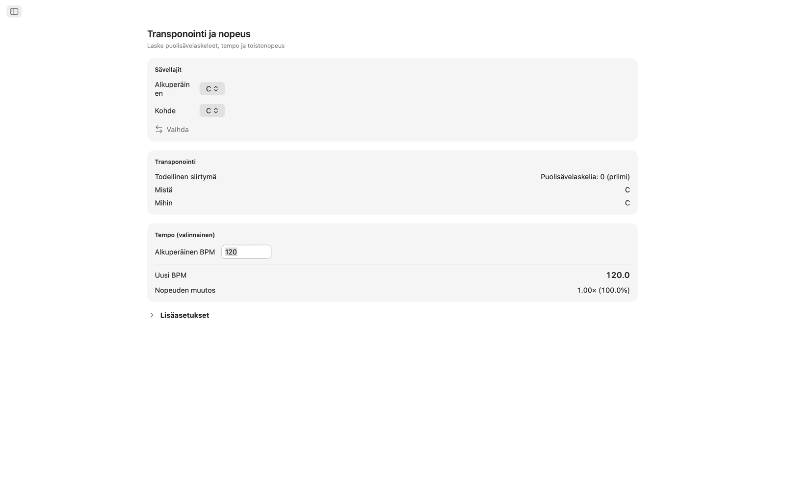
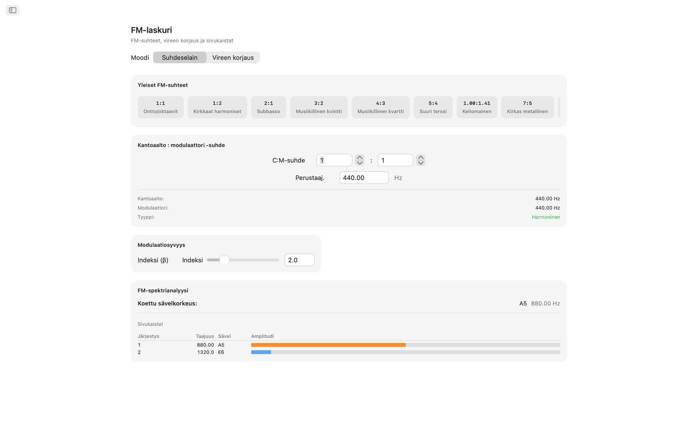
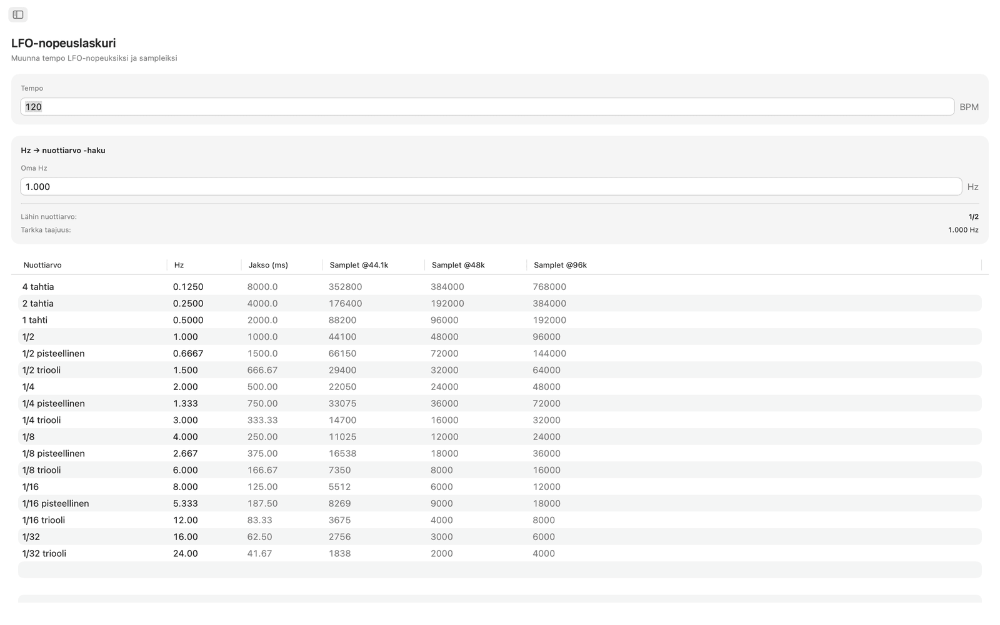
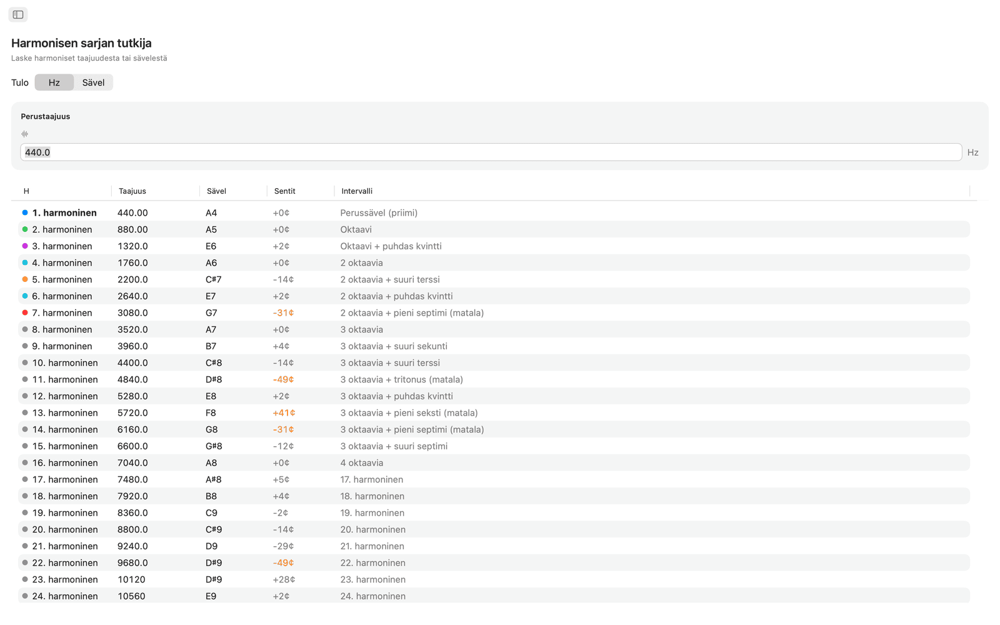
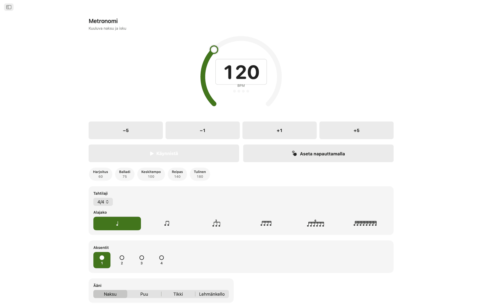
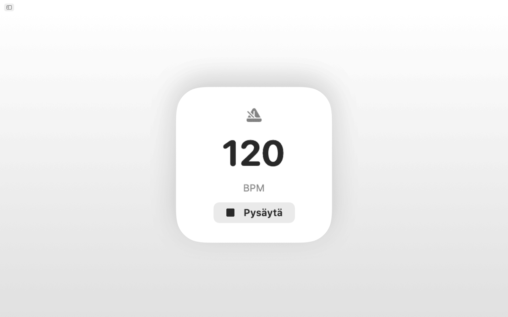
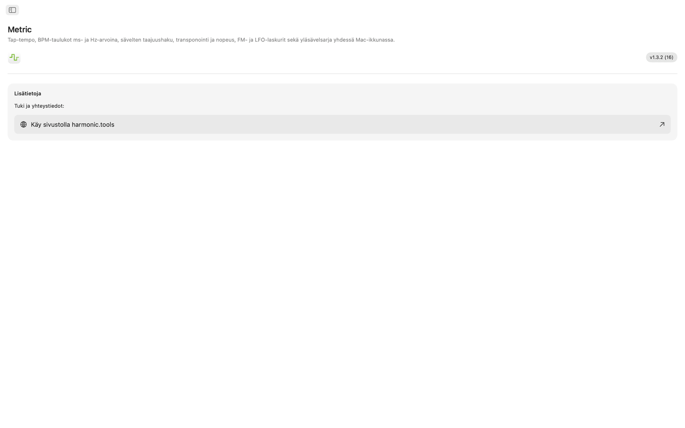
Ominaisuudet
- Metronomissa on tempokiekko, tempon asetus napauttamalla, tahtilajit, alajaot ja visuaalinen iskunilmaisin.
- Napsauta isoa napautusaluetta mitataksesi tempon. Metric näyttää viimeisimmän napautuksen BPM:n ja liukuvan keskiarvon jopa kahdeksasta napautuksesta, ja kumman tahansa lukeman voi viedä yhdellä napsautuksella BPM-muuntimeen, Transponointiin tai LFO-nopeuden työkaluun.
- BPM → ms / Hz -muunnin ottaa tempon ja antaa suorat, pisteelliset ja triooliarvot koko-, puoli-, neljäsosa-, kahdeksasosa- ja kuudestoistaosanuoteille. Jokaisella rivillä on millisekunnit ja taajuus hertseinä, joten viiveen, kaiun esiviiveen tai sidechain-ajoituksen saa kohdalleen ilman laskinta.
- Sävelten taajuustaulukossa on kaikki 108 kromaattista säveltä C0:sta B8:aan. Jokaisesta sävelestä näkyvät MIDI-numero, taajuus hertseinä, jakso millisekunteina sekä samplemäärät 44,1, 48 ja 96 kHz:llä. Keski-C on merkitty. Arvot perustuvat vireeseen A4 = 440 Hz.
- Transponoinnissa valitset alkuperäisen ja kohdesävellajin, niin näet puolisävelaskelten siirron, intervallin nimen ja tarkan DAW-transponointiarvon. Lisää alkuperäinen BPM, ja Metric laskee uuden tempon ja toiston nopeussuhteen. Hienosäätöön on sentti-liukusäädin (±100) ja kaksi oktaavia kattava nopeusliukusäädin (±24 puolisävelaskelta).
- FM-laskurissa on kaksi tilaa. Suhdeselaimessa asetat kantoaallon ja modulaattorin suhteet perustaajuudella ja valitset kymmenestä FM-esiasetuksesta, ontoista oktaaveista (1:1) epäharmonisiin kelloihin (1:π). Vireen korjaus -tila toimii päinvastoin: valitse kohdesävel, niin saat tarkat kantoaallon ja modulaattorin taajuudet. Molemmat tilat näyttävät sivukaistataulukon: jopa kymmenen osasäveltä, taajuudet, lähimmät sävelet ja värikoodatut amplitudit modulaatioindeksin liukusäätimen mukaan.
- LFO-nopeuslaskuri muuntaa minkä tahansa BPM:n LFO-nopeuksiksi 17 musiikillisella jaolla, neljästä tahdista 1/32-triooleihin. Jokaisella rivillä näkyvät Hz, jakso millisekunteina ja samplet per kierros 44,1, 48 ja 96 kHz:llä. Käänteishaulla syötät Hz-arvon ja löydät lähimmän musiikillisen jaon, ja virhe näytetään.
- Harmonisen sarjan tutkija alkaa taajuudesta tai mistä tahansa sävelestä ja listaa 32 ensimmäistä harmonista: taajuus, lähimmän sävelen nimi, senttipoikkeama ja intervalli. Alimmat harmoniset on värikoodattu, ja yli 30 sentin poikkeamat korostetaan, joten epäharmoninen sisältö erottuu helposti.
Yhteinen tempo ja vire
Napauta tempo kerran, niin BPM-muunnin, Transponointi ja LFO-nopeus käyttävät samaa BPM:ää. Sävelten taajuus, FM-laskuri ja Harmoniset käyttävät kaikki vireen A4 = 440 Hz.
Siri, Pikakomennot ja widget
Pyydä Siriä käynnistämään tai pysäyttämään metronomi, asettamaan BPM, mittaamaan tempo napauttamalla, muuntamaan BPM millisekunneiksi, hakemaan sävelen taajuus tai transponoimaan tempo. Jokainen työkalu on myös Pikakomennot-toiminto, ja BPM-widget pitää tempon Ilmoituskeskuksessa.
Valikkorivin työkalut
Napauta tempo valikkoriviltä avaamatta sovellusta. Napsauta oikealla painikkeella nähdäksesi viiveajat ms- tai Hz-yksiköissä ja kirjoita mikä tahansa tempo. Metronomi ja sävelkorkeuksien kohteet ovat valinnaisia, ja asetuksista löytyvät pelkkää valikkoriviä käyttävä tila ja avaus kirjautuessa.
Työpöydällä
- Toimii kokonaan offline-tilassa. Ei tiliä, ei mainoksia, ei seurantaa
- Natiivi macOS-sovellus sivupalkkinavigoinnilla
- Tummaan tilaan mukautuva käyttöliittymä, joka seuraa järjestelmän ulkoasua
- Samplemäärät 44,1, 48 ja 96 kHz:llä
- Kokoa muutettava ikkuna. Pidä se auki DAW-ohjelman vieressä
Saavutettavuus
Toimii VoiceOverin ja Puheohjauksen kanssa, ja sitä voi käyttää näppäimistöllä nuolinäppäimillä ja välilyönnillä.
Metric on ilmainen 7 päivän ajan. Kokeilun jälkeen täysi käyttöoikeus ostetaan kertamaksulla, ei tilausta.